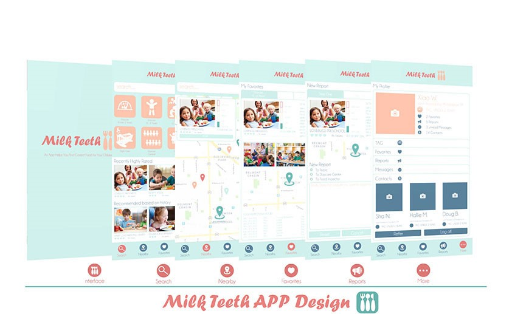
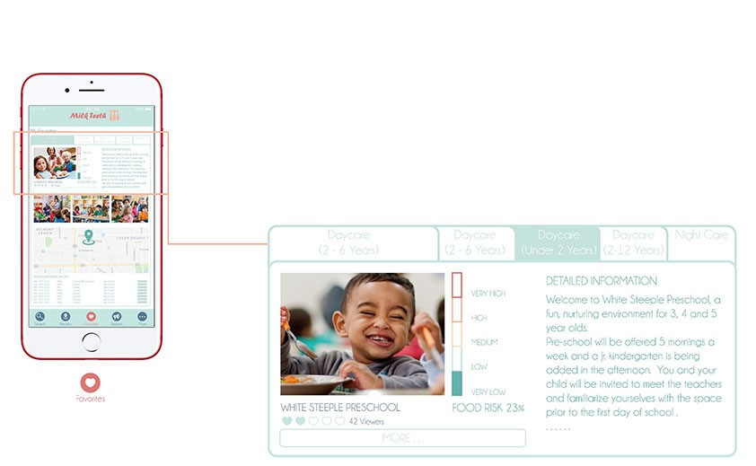
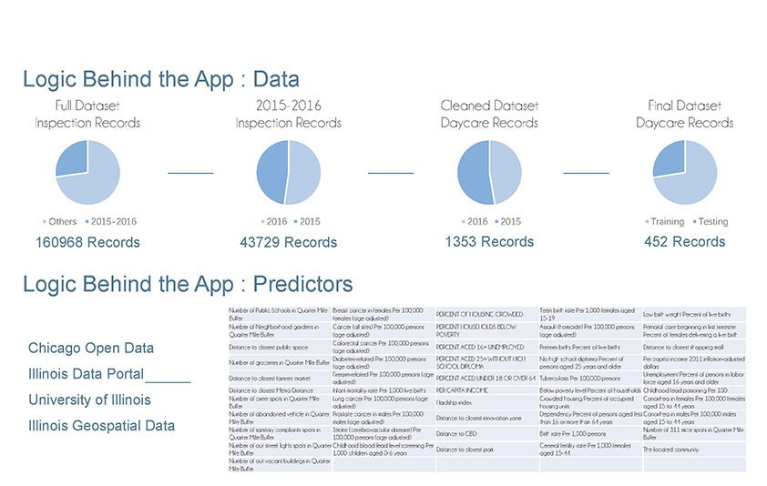
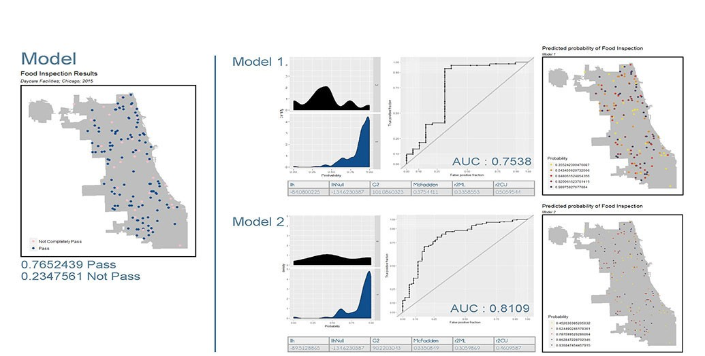

Predicting Food Inspection Failure in Chicago
Intro
This project aims to improve wetland land cover classification in Great Bay, New Jersey coastal area using high-resolution data collected through Unmanned Aerial Vehicles (UAVs) equipped with multispectral cameras. In this project we use multispectral imagery to better distinguish between wetland types, such as high and low marsh areas, which are typically oversimplified in thematic data such as that provided by the National Land Cover Database (NLCD).
Classification Methodology
The enhanced dataset will allow for more accurate identification of water boundaries and wetland classifications, essential for managing flood risks and ecosystem health in coastal areas. In this project, I worked extensively with high-resolution, multi-band imagery and employed supervised classification using Support Vector Machine (SVM) algorithms to develop a detailed land cover classification for the wetland area, based on training sample wavelengths.
International Classifications
Additionally, I applied various international land cover classification standards to the same area to achieve the best results. The application of these different classification systems clearly demonstrates how the spatial and thematic structures of each system shape our understanding of the landscape. A comparison of the legends highlights both similarities and differences in how land cover themes are defined.
Conclusion
Comparing NLCD data with UAV-collected data revealed significant improvements in detail and accuracy, leading to better environmental impact studies and more informed policy decisions. This approach offers a scalable solution for improving land cover data in other at-risk coastal regions, ultimately supporting more effective environmental management and conservation efforts.
Advisor
Karen M’Closkey and Keith VanDerSys
Categories
Remote Sensing , ArcGIS
Date
09/2020 – 04/2021